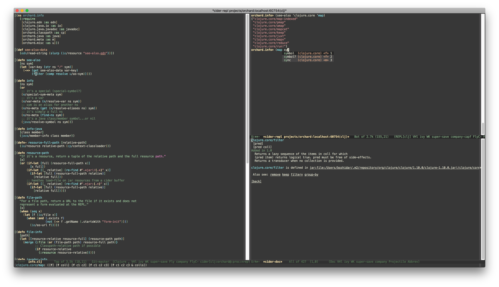

CIDER is the Clojure(Script) Interactive Development Environment that Rocks!

CIDER is the Clojure(Script) Interactive Development Environment that Rocks!
CIDER extends Emacs with support for interactive programming in Clojure. The features are centered around cider-mode, an Emacs minor-mode that complements clojure-mode. While clojure-mode supports editing Clojure source files, cider-mode adds support for interacting with a running Clojure process for compilation, debugging, definition and documentation lookup, running tests and so on.
The canonical way to install CIDER via Emacs's build-in package manager. Assuming you've setup the required repository (e.g. MELPA), all you need to do is M-x package-install RET cider RET
Refer to the user manual for more details on the installation process.
The simplest way to start CIDER is via C-c C-x j j. This command will spin an nREPL server and connect CIDER to it.
Refer to the user manual for more details on starting and using CIDER.
CIDER packs a lot of features. Here we'll highlight a few of them.
CIDER provides smart code completion for Clojure and ClojureScript.
CIDER provides powerful code and documentation lookup facilities.
CIDER ships with a powerful source code debugger inspired by Edebug.
CIDER provides a super-charged REPL experience with all the bells and whistles you can imagine.
CIDER tries to present Clojure's notorious stacktraces in a manner that's less intimidating and more informative.
CIDER gives you the ability to run your tests without ever leaving your editor.
Hacker fame is just cider-jack-in away!
© 2019 Bozhidar Batsov and CIDER contributors. All rights reserved.
Template By Bootstrapious